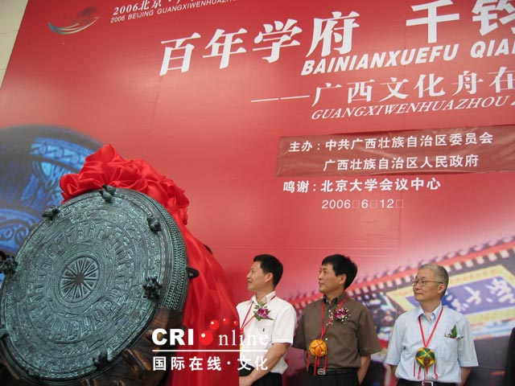

6 月12日，在北大百年讲堂大厅，举行了简短而热烈的2006广西文化舟走进北京大学仪式－－“百年学府，千钧铜鼓”。 >>> 相关新闻
铜鼓是中国南方和东南亚地区一种富有传奇色彩的民族历史文物。它最早于公元前7世纪左右出现于中国云南西部地区，然后随着民族的迁移和文化交流，散布到中国南方和东南亚广大地区，被许多民族接受，并被视为神器，流传了两千多年，至今还在一些民族中行用不衰。
铜鼓是由炊具铜釜演化而来的。最早的铜鼓就是煮饭的铜釜，人们吃饱喝足以后，将铜釜翻转过来，敲击底部，伴歌伴舞以自娱。后来将铜釜改进，作为专用乐器，就成了铜鼓。铜鼓的主要用途是娱乐和祭祀。在古代曾作为一些民族统治者权力和地位的象征，有时也用来指挥军阵和传递信息。在这些民族中，有鼓者号为“都老”，群情推服。拥有铜鼓越多，权力越大，越是富有，甚至“得鼓二三，便可潜号称王”。使用铜鼓的民族相信，铜鼓有神，可以与神灵沟通，所以在某些祭祀场合，一定要有铜鼓。因而对铜鼓敬畏有加，不能随便触动，启用和收藏都有很多繁琐礼仪，包含着丰富的宗教文化内涵。
中国是铜鼓使用历史最久、使用民族和人口最多、分布地域最辽阔的国家，铜鼓在我国主要分布在云南、贵州、广西、广东、海南、四川、重庆、湖南等省（市、自治区）民族地区，在这些地区，自古以来，不断有铜鼓被埋入地下，也不断有铜鼓从地下出土，流入民间收藏。在我国现藏各级博物馆、科研机构铜鼓1400多面，其中广西珍藏600多面，仅广西壮族自治区博物馆就藏344面，是世界上收藏铜鼓最富的一家博物馆。
沧海桑田，经过千百年的淘冶，铜鼓在许多地区和民族中，先后退出了历史舞台，只留下某些遗迹和记忆，只有小部地区和民族将铜鼓习俗延续了下来，成为积淀铜鼓文化的“活化石”。现在世界上还保留铜鼓使用习俗的民族地区只有两大块：一块是中南半岛西北部，以缅甸、老挝、泰国交界的掸邦山区为中心；另一块是中国广西西北部与贵州黔东南接壤的地区，以红水河及其上游南北盘江流域为中心。生活在中国境内的壮族、布依族、水族、侗族、瑶族、苗族、彝族还在使用铜鼓。壮族的青蛙节、布依族的嫩信节（春节）、水族的端节、瑶族的祝著节、苗族的芦笙节、彝族的跳宫节都在使用铜鼓。据调查，河池市民间还在使用的铜鼓有 1400多面，是现存铜鼓最密集的地区。
东盟十国中的越南、泰国、老挝、柬埔寨、缅甸、马来西亚、新加坡、印度尼西亚等国古代都有铜鼓，越南的芒族、缅甸的克伦族至今还用铜鼓，可以说铜鼓是中国南方和东盟各国共同的文化载体。
这次为广西文化舟活动专门铸造用于赠送北京市委、市人民政府的礼品大铜鼓，直径110厘米，高60厘米，重量约120公斤。该铜鼓的铸造者为广西环江县上朝镇壮族农民，花纹、外观、金属比例，音色等均与传统铜鼓无异，是迄今为止按民间传统工艺铸造的可用于演奏的最大的铜鼓。